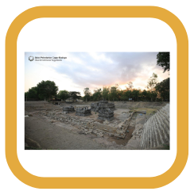
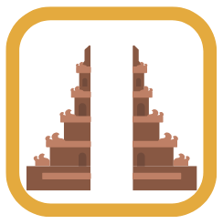

10 Fun Fact Candi Kedulan
-
Lokasi
Candi Kedulan terletak di Dusun Kedulan, Desa Tirtomartani, Kecamatan Kalasan, Sleman, Daerah Istimewa Yogyakarta, berada pada koordinat 7° 44’ 28” LS dan 110° 28’ 5” BT, Candi Kedulan ditemukan dalam keadaan runtuh dan terpendam material vulkanik yang terbawa oleh lahar Gunung Merapi. Berdasarkan hasil kajian stratigrafi, Candi Kedulan telah tertutup lahar setebal 8 meter yang tersusun atas 15 lapisan sedimen.
-
Prasasti
Terdapat dua buah prasasti yaitu prasasti Sumundul dan prasasti Pananggaran. Kedua prasasti bertuliskan huruf bahasa Jawa Kuno berangka tahun 791 Saka. kemudian diterjemahkan oleh Cahyono dan Riboet dari Fakultas Ilmu Budaya UGM, menjelaskan adanya bangunan suci bernama Tiwagaharyyan oleh karena itu menentukan masa pendirian Candi Kedulan mengacu pada angka yang tertera pada dua prasasti tersebut. Candi Kedulan bercorak Agama Hindu dibangun sekitar abad ke 8 dan ke-10 pada saat zaman kejayaan Mataram Kuno
-
Sejarah
Bangunan induk Candi Kedulan ditemukan pada tanggal 24 November 1993 secara tidak sengaja oleh para penambang pasir yang sedang menambang pasir di lahan gersang milik tanah kas desa. candi ini ditemukan terletak tiga sampai tujuh meter dibawah permukaan tanah, kemungkinan besar karena tertimbun lahar Gunung Merapi.
-

Kompleks Candi
Kompleks Candi Kedulan terdapat 4 Candi yang terdiri dari satu Candi Induk/ utama yang menghadap ke timur dan Tiga buah Candi Perwara yang berjajar dari utara ke selatan. Selain bangunan Candi Induk dan Perwara, Candi Kedulan memiliki Pagar halaman 1 dan 2.
-
Pemugaran Saluran Air
Pada saat musim penghujan candi kedulan selalu digenangi air sedalam 6 meter dilakukan kajian penanganan genangan air dan direkomendasikan untuk pembuatan gorong gorong ke arah selatan sejauh 220m.Pada tahun 2017 kegiatan pembuatan gorong-gorong dilakukan.
-
Pemugaran Candi Induk
Pada tahun 2018 dilakukan pemugaran Candi Induk. Candi Induk adalah candi yang paling utama bangunan candi lebih megah dan besar. Ukuran Candi Induk 12,05 x 12,05 meter. Pada bagian pipi tangga terdapat hiasan makara dan pada bagian kaki candi memiliki selasar yang dikelilingi pagar langkan.
-
Pemugaran Candi Perwara
Pada tahun 2019 dilakukan pemugaran Candi Perwara. Candi Perwara bangunan lebih kecil dari Candi Induk. Candi Perwara terletak di depan Candi Induk. Ukuran bangunan candi 4 meter X 4 meter. Pada bilik yang didalam Candi ditempatkan Lingga Yoni, Arca Mahakala dan Arca Nandishwara.
-

25 Tahun
Membutuhkan 25 Tahun untuk merekonstruksi candi. Kesenangan yang berbeda akan didapatkan bila mengunjungi candi ini, sebab bisa menikmati proses rekonstruksi candi yang sangatlah rumit
-
Mirip Candi Sambisari
candi Kedulan bentuk arsitekturnya mirip Candi Sambisari. Tetapi dari segi seni hiasannya, justru mendekati hiasan Candi Ijo dan Candi Barong. Jika Candi Sambisari menghadap ke barat, maka Candi Kedulan menghadap ke arah timur. Candi Sambisari hanya memiliki pipi tangga pada candi utama saja, sedangkan pada Candi Kedulan juga terdapat pipi tangga pada candi perwara (pendampingnya).
-

Fasilitas
Candi Kedulan merupakan destinasi candi baru di Sleman. Belum adanya terdapat fasilitas seperti Mushola, Toilet, dan Tempat Makan. Harapannya bisa dilakukan penambahan fasilitas untuk pengunjung.
-

2019
Kelanjutan dari kegiatan pemugaran pada tahun 2018 dengan memugar tiga candi perwara